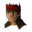

Megan

| Config name | partyroom_barmaid |
| NPC id | 661 |
| Combat level | hidden |
| Options | Talk-to |
| Wander range | 5 tiles from spawn |
| Defined in | scripts/minigames/game_partyroom/configs/partyroom.npc |
Megan
Pretty barmaid.
Show all 1 spawn on the world map → Open in knowledge graph →
Locations
| Area | Coordinates | Level | Count | Map |
|---|---|---|---|---|
| Flax | 2738, 3472 | 1 | 1 | view |
Dialogue
MeganHi! I'm Megan. Welcome to the Party Room!
PlayerOne beer please Megan!
MeganComing right up <text_gender(
PlayerI'm sorry but I don't have enough money!
PlayerCan you dance, Megan?
MeganCan I dance?!
MeganCAN I dance?!!
PlayerDance with me Megan!
PlayerDo you have any news?
MeganNot at the moment. I've heard that the known world is expanding as new places are discovered.
MeganThese are exciting times indeed!
Referenced in scripts
scripts/minigames/game_partyroom/scripts/partyroom_megan.rs2